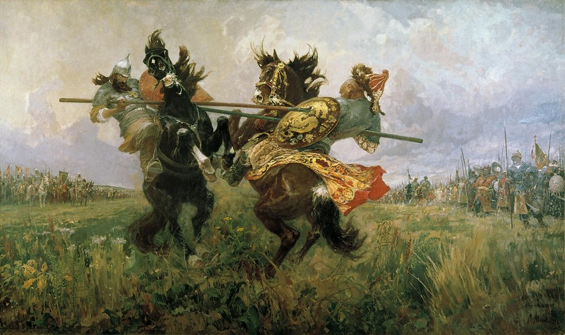

1380 год. Куликовская битва
Эта битва произошла между войском Дмитрия Донского и армией Мамая. Куликовское сражение является ключевым событием, оказавшим огромное влияние на разгром татаро-монгольского ига. Победа Дмитрия Донского нанесла огромный удар по Золотой Орде, которая к тому времени держала в страхе и подчинении почти пол мира. Известная былина гласит, что непосредственно перед Куликовским сражением, произошел поединок русского богатыря Пересвета и печенегом Челубеем, чего требовали традиции той эпохи.
Текст Вкладки 2
Текст Вкладки 3